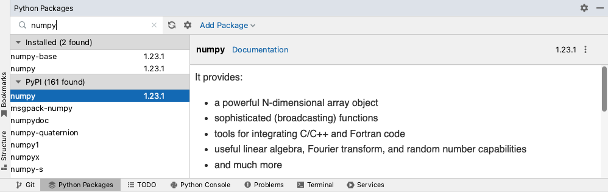

NumPy
Contents
2.4. NumPy#
2.4.1. What is NumPy?#
NumPy is a popular Python package for scientific computing. It provides multidimensional arrays objects and functionality for fast operations on them and facilitates mathematical operations. NumPy is used in other popular Python packages including Pandas, SciPy, Matplotlib and scikit-learn.
2.4.1.1. NumPy arrays vs standard Python sequences (e.g., lists)#
Below are the main differences between NumPy arrays and standard Python sequences such as lists:
NumPy arrays can only contain the same type of data items, for example, you cannot have one data item as
intand another asstr.Numpy arrays have a fixed size when they are created, and changing size of NumPy arrays will create a new array. This is different to standard Python list which can grow dynamically.
NumPy uses a vectorised code system for arrays, which enables the application of operations on each data item without the use of loops. This facilitates mathematical and other operations and has the following advantages:
Fewer lines of code
Fast (this is more evident with large list sizes)
Easier to read; resembles mathematical notation.
As an example, the code below shows the code in standard Python code and in NumPy code that multiplies two lists:
for i in range(len(a)):
c.append(a[i]*b[i])
c = a * b
2.4.2. Importing NumPy#
If you are using Jupyter Lab to run your Python code, since we have set up a Conda environment for these practicals with all the packages required to run the practicals, NumPy should already be installed on your machine.
If you are using PyCharm to code, you can check whether NumPy is installed on your Python environment from the Python Packages tab in PyCharm. If it is not, you would see an install button whe you search for it in the Python Packages tab. 
Once you have checked that it is installed on your machine, to be able to use NumPy we need to import it in the code. The widely adopted convention is as follows:
import numpy as np
2.4.3. Creating NumPy arrays#
A NumPy array is the main data structure of NumPy. We can create a NumPy array from a Python list as follows:
a = np.array([55, 92, 110, 66, 75, 45, 40, 57, 55, 62])
{kind=link}
Fig. 2.4 ndarray object in PyCharm’s Variable pane.#
This creates an array object of type ndarray in memory as we can see from PyCharm’s variable pane in Fig. 2.4.
ndarray is short for “N-dimensional array”, which means any number of dimensions. In NumPy:
1-D (one-dimensional) array is also called a vector and is similar to a Python list.
2-D (two-dimensional) array is also called a matrix.
3-D or higher dimensional arrays are also known as tensor. In this practical we will focus on vectors (1-D arrays) only.
Fig. 2.5 Representation of ndarray object in memory and its index positions of its data items.#
Fig. 2.5 above shows a representation of the ndarray object created in memory after running the code a = np.array([55, 92, 110, 66, 75, 45, 40, 57, 55, 62]).
In this example, variable a points to an ndarray object in memory. As you can see, the ndarray object is composed of different attributes.
The data of the ndarray object is not stored inside the ndarray object, the ndarray object points to it. We will be
looking at how we can use the ndarray object as we go along.
NumPy arrays can be created using other functions. The table below lists commonly used functions to create NumPy arrays.
Function |
Description |
Example |
|---|---|---|
|
returns a new |
|
|
returns a new |
|
|
returns a new |
|
|
|
|
|
returns a new |
|
To get the length of an ndarray object use the size attribute as follows:
a.size
10
Exercise 2.3 (Creating NumPy arrays)
Level:
Try the examples in Table 2.1 in the PyCharm console. For each example, look at the Variables pane in the console to see the
ndarrayobject created.Generate a NumPy array that contains 20 evenly spaced numbers from 0 to 1. What is the spacing between the numbers? Hint: use parameter
retstep.Use the
np.full()function to create a NumPy array with ten 0.1 values.
2.4.4. NumPy data types - dtype#
NumPy is written in C, a low-level language. Because of this, it inherits some features that are normally associated with low level languages, NumPy data types are one of them.
While the size of the standard Python data types (e.g., int, float) offer flexibility, that is,
they can grow to accommodate numbers of different sizes (within the machine’s memory constraints), NumPy data types
have fixed sizes. For example, in NumPy an int has several dtypes: int8, int16, int32, int64. int8 means
that a number created as int8 will be stored in 8 bits or 1 byte of memory. That is why the larger the number of bits
allocated to a number, the larger the range of numbers can be held. Table 2.2 below gives us an indication of the range
of numbers that can be held in the respective integer dtype.
dtype |
Number capacity |
|---|---|
|
-128 to 127 |
|
-32,768 to +32,767 |
|
-2,147,483,648 to +2,147,483,647 |
|
-9,223,372,036,854,775,808 to +9,223,372,036,854,775,807 |
Numpy also has dtypes equivalent to the corresponding standard Python data types:
Standard Python data type |
NumPy data type |
|---|---|
|
|
|
|
|
|
|
|
When creating an array, NumPy automatically detects the type of data the array is made up of and allocates a data type that
fits that array based on several factors (including the computer’s architecture). Because of this, we do not need to worry about
which NumPy data type to allocate to our arrays as NumPy does that automatically for us. In the case when we need to
specify the dtype argument in NumPy functions, in this course we will be using the standard Python data types.
Exercise 2.4 (dtype of NumPy arrays)
Level:
l = [55, 92, 110, 66, 75, 45, 40, 57, 55, 62]
a = np.array(l)
Using the code above:
What is the
dtypeofa? (Look into PyCharm’s Variable pane to check thedtypeofa).
What is the
dtypeofnp.zeros(3)? Why do you think this is the case?Using list
l, create a NumPy array that contains the values oflinstrformat. What is thedtypeof this array?
2.4.5. Array manipulation operations#
Function |
Description |
Example |
|---|---|---|
|
returns a new NumPy array with the |
|
|
returns a new NumPy array with the |
|
|
returns a new NumPy array with the data items in |
|
|
returns a new NumPy array with the data items of |
|
|
returns a new NumPy array with the joined sequence of arrays. |
|
|
returns the unique data items in |
|
Exercise 2.5 (manipulating NumPy arrays)
Level:
Try the examples in Table 2.3. Check the output of each example.
Sort NumPy array
ain descending orderCreate a NumPy array with the following values: [9, 3, 9, 8, 9, 4, 2, 0, 2, 5, 4, 7, 5, 1]
Get the frequency of each value in the array.
Get the index positions of the first occurring unique values in the array.
2.4.6. Slicing NumPy arrays#
We slice a NumPy array when we want to extract data items from it. Slicing in NumPy arrays works the same as slicing in
standard Python lists; using square brackets to specify the star, end and step of items we would like to extract from the NumPy array.
The code below provides a few examples:
# extract data item at index position 2
a[2]
print(a[2])
# extract data items from index position 2 to index position 5 (excluded)
a[2:5]
print(a[2:5])
# extract every second data item from index position 1 to index position 2
a[1:8:2]
print(a[1:8:2])
110
[110 66 75]
[92 66 45 57]
2.4.7. Views and Copies of NumPy arrays#
When we create a new variable (b) and assign it to an existing ndarray object (a), that variable will also point to the same ndarray object.
Fig. 2.6 is a representation of this.
Fig. 2.6 Representation of ndarray objects a and b in memory when b = a.#
Because of this, a change in b also effects a.
# create a NumPy array a from list l
l = [55, 92, 110, 66, 75, 45, 40, 57, 55, 62]
a = np.array(l)
print("ID of a is:", id(a))
b = a
print("ID of b is:", id(b))
b[3] = 60
print(a)
print("ID of a is:", id(a))
print("ID of b is:", id(b))
ID of a is: 140636052451856
ID of b is: 140636052451856
[ 55 92 110 60 75 45 40 57 55 62]
ID of a is: 140636052451856
ID of b is: 140636052451856
In the example above, b and a share the same object ID. Changing the data item in index position 3 of b, caused
the change in a as well, since both are the same object.
As we have seen in Fig. 2.5, NumPy arrays save their data separately from the ndarray object. The view() method of an ndarray object creates a new ndarray object that points to the same data of the base array.
Because it is pointing to the same data, any changes made to the view object will be effected in the base object which is
the ndarray where the array data is actually stored. In the example below c is the view object and a is the base object.
As you can see the object ID of the base of c and a are the same.
c = a.view()
print("ID of a is:", id(a))
print("ID of c is:", id(c))
c[3] = 62 #this changes also a
print(a)
print("ID of base array of c is:", id(c.base))
ID of a is: 140636052451856
ID of c is: 140636052451568
[ 55 92 110 62 75 45 40 57 55 62]
ID of base array of c is: 140636052451856
Fig. 2.7 Representation of NumPy view in memory.#
Slicing a NumPy array also returns a view of it:
d = a[2:5]
d[0] = 80 #this changes a[2] as well!
print(d)
print("ID of d is:", id(d))
print(a)
print("ID of a is:", id(a))
[80 62 75]
ID of d is: 140636052447248
[55 92 80 62 75 45 40 57 55 62]
ID of a is: 140636052451856
When creating a copy of an ndarray however, this would create a completely new copy, that is, though the contents would
be the same, the objects are two different ones in memory.
Fig. 2.8 Representation of NumPy copy in memory.#
#create a copy of ndarray a
e = a.copy()
print("ID of a is:", id(a))
print("ID of e is:", id(e))
e[3] = 70
print(f"a is: {a}")
print(f"e is: {e}")
ID of a is: 140636052451856
ID of e is: 140636052802704
a is: [55 92 80 62 75 45 40 57 55 62]
e is: [55 92 80 70 75 45 40 57 55 62]
Exercise 2.6
Level:
To understand the difference between views and copies of NumPy arrays, run the code in this section (Views and copies of NumPy arrays). In each example, get the object ID of the NumPy array created and try to change a data item in the NumPy arrays. This should help you understand whether the same object or same data is being processed in each case.
2.4.8. Vectorised array operations#
One of the main differences between standard Python data sequences such as lists and NumPy arrays is that NumPy arrays use a vectorised system
which allows us to perform operations over all the ndarray object using one line of code as opposed to using a loop as we do with lists.
print(a)
# Check whether each data item in a is > 60
a > 60
print(a > 60)
[55 92 80 62 75 45 40 57 55 62]
[False True True True True False False False False True]
The code above returns a list of True and False values; True if the data item is > 60, and False otherwise. If we
try to do the same with the standard Python list, we get an error (see below). This is because lists do not use a vectorised
system, so to compare items in a list you would need to compare each item at a time via a loop.
# If you try to the same with a standard Python list you would get an error
l > 60
---------------------------------------------------------------------------
TypeError Traceback (most recent call last)
Input In [11], in <cell line: 2>()
1 # If you try to the same with a standard Python list you would get an error
----> 2 l > 60
TypeError: '>' not supported between instances of 'list' and 'int'
To get the actual data values (not just True and False) we have to use our comparison statement inside the square brackets []
as essentially we want to slice our ndarray object based on a condition:
a[a > 60]
array([92, 80, 62, 75, 62])
This approach is similar to the way we extract items from vectors in R. You can combine multiple comparison statements using
the & (and) and | (or) logical operators (see example below). Note these logical operators have a different notation to the ones we used
previously from the standard Python library.
# get the values that are > 60 and < 90:
a[(a > 60) & (a < 90)]
array([80, 62, 75, 62])
Exercise 2.7 (Odd and even numbers with NumPy arrays)
Level:
Using the list of integers: 55, 92, 110, 66, 75, 45, 40, 57, 55, 62
write code using NumPy arrays to print two list:
the even numbers from the list of numbers
the odd numbers from the list of numbers.
2.4.8.1. Mathematical operations using NumPy arrays#
Similarly, arithmetic operations can be performed on an array in one statement. For example:
a1 = np.array([10,20,30])
a2 = np.array([2,10,3])
# add arrays together
print(f"a1 + a2 is: {a1 + a2}")
#subtract
print(f"a1 - a2 is: {a1 - a2}")
#multiply
print(f"a1 * a2 is: {a1 * a2}")
#divide
print(f"a1 / a2 is: {a1 / a2}")
a1 + a2 is: [12 30 33]
a1 - a2 is: [ 8 10 27]
a1 * a2 is: [ 20 200 90]
a1 / a2 is: [ 5. 2. 10.]
You can also use aggregate functions on NumPy arrays that perform an operation across all items in the array and return one result back. For example:
#aggregate functions
print(f"sum of all data items in a1 is: {a1.sum()}")
print(f"min of a1 is: {a1.min()}")
print(f"max of a1 is: {a1.max()}")
print(f"mean of a1 is: {a1.mean()}")
print(f"standard deviation of a1 is: {a1.std()}")
sum of all data items in a1 is: 60
min of a1 is: 10
max of a1 is: 30
mean of a1 is: 20.0
standard deviation of a1 is: 8.16496580927726
You can also perform element-wise mathematical operations, below are a few examples:
a3 = np.array([1, 4, 9])
#return element-wise square root
sqrt_ans = np.sqrt(a3)
print(f"square root: {sqrt_ans}")
# square each element in ndarray
# square(sqrt(x)) = x
square_ans = np.square(sqrt_ans)
print(f"square: {square_ans}")
# calculate exponential of each data item
exp_ans = np.exp(a2)
print(f"exponential: {exp_ans}")
# calculate the natural logarithm of each data item in ndarray
# the natural logarithm is the inverse of the exponential function: log(exp(x)) = x
log_ans = np.log(exp_ans)
print(f"natural logarithm: {log_ans}")
square root: [1. 2. 3.]
square: [1. 4. 9.]
exponential: [7.38905610e+00 2.20264658e+04 2.00855369e+01]
natural logarithm: [ 2. 10. 3.]
There are several other mathematical functions that can be applied on ndarrays. A full list can be found here.
2.4.8.2. Broadcasting#
We have seen so far how we can perform arithmetic operations on NumPy arrays of the same size. Broadcasting refers to when we want to perform an operation between NumPy arrays of different sizes. In this course we will be focusing on operations between NumPy arrays and single values, for example, an integer. In this case the integer is “broadcast” across the NumPy array so that they have similar sizes for the operation to be possible.
a1 * 2
array([20, 40, 60])
All these features make NumPy desirable to work with mathematical formulas. The example below shows an example how the formula \(\sum_{i=1}^{n} (x_{i} + 3)^2\) is computed with NumPy arrays.
x = np.array((5, 5, 6))
ans = np.sum(np.square(x - 3))
print(ans)
17
Fig. 2.9 Step-by-step execution of \(\sum_{i=1}^{n} (x_{i} + 3)^2\).#
Exercise 2.8 (Mathematical formulas)
Level:
Given the following lists:
Y = [2, 1, 2, 3, 2, 4]
\(\hat{Y}\) = [1, 1, 1, 2, 2, 1]
Use NumPy to find the result of the following equation:
\(MSE = \frac{1}{n}\sum_{i=1}^{n} (Y_{i} - \hat{Y}_{i})^2\)
2.4.9. Random sampling#
Another functionality that NumPy offers is the generation of random numbers. To generate a random number we first call
the default_rng() method to create an instance of Generator. Initialising the generator with a seed allows replication
of results.
# set a seed so that results can be replicated
seed = 12345
# create a generator and initialise it with seed
rng = np.random.default_rng(seed=seed)
#generate 3 random integers between 1 and 10 (excluded)
rints = rng.integers(low=1, high=10, size=3)
print(rints)
# generate 3 random decimal numbers in the range[0,1]
rfloat = rng.random(3)
print(rfloat)
[7 3 8]
[0.79736546 0.67625467 0.39110955]
You can also draw samples from a distribution. For example:
#draw 5 samples from the normal distribution where mean=0 and standard deviation is 0.1
mu, sigma = 0, 0.1 # mean and standard deviation
sample_normal = rng.normal(mu, sigma, 5)
print(sample_normal)
[-0.07408847 -0.13677927 0.06488928 0.03610581 -0.19528631]
For a whole list of distributions to sample from see here.
Exercise 2.9 (Random numbers)
Level:
Run the code in the Random sampling section to explore generating numbers.
Using a seed, initialise a generator and generate a random number. Repeat this again so as to have 2 generators using the same seed. What do you notice about the two random numbers generated?
What happens if you remove the seed?
Draw 100 samples from a binomial distribution with 10 trails and 0.3 probability of success.